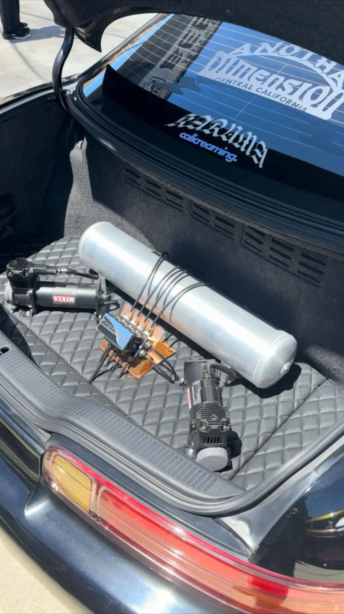
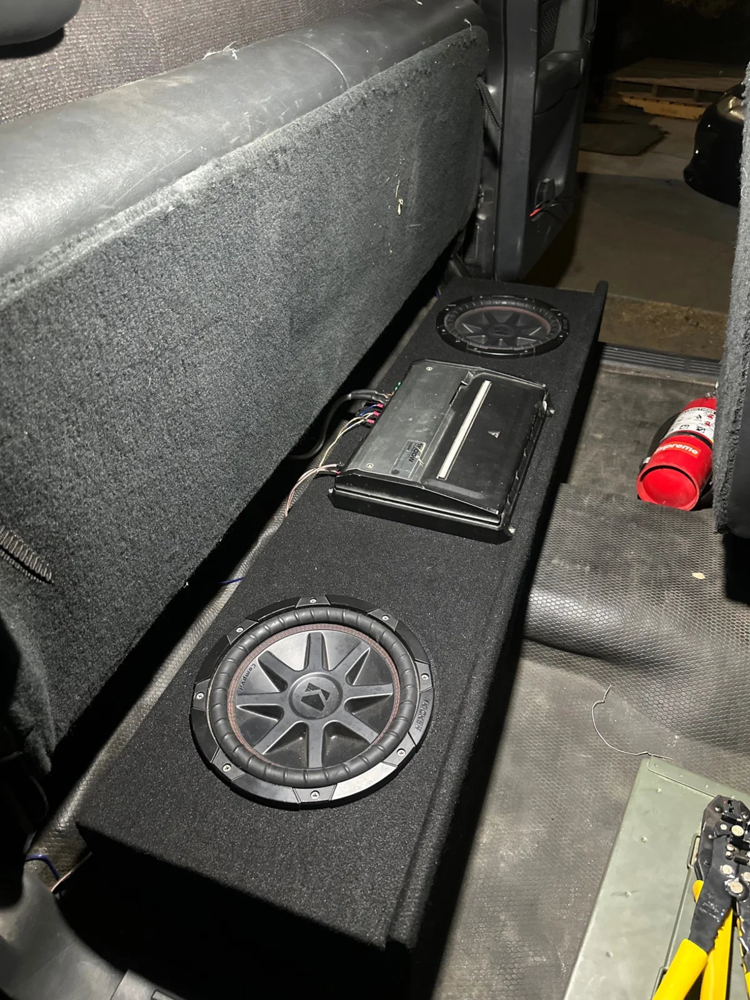

AUDIO · AIR SUSPENSION · AFTERMARKET
YOUR VISION.
A THOUGHTFUL INSTALL.
A visible trunk layout or a concealed setup. A radio upgrade or a subwoofer install. Start with your vehicle and how you want to use it.

FEATURED BUILD / AIR SUSPENSION
MAKE ROOM
FOR THE DETAILS.
This trunk project brings the air tank, manifold, and twin compressors together on a quilted base. The gallery follows the same installation from an earlier stage to the completed layout.
Prefer to keep the hardware out of sight? The separate concealed installation shows an approach designed to fit underneath the interior panels.
View the build stages ↗AUDIO & ELECTRONICS
YOUR MUSIC.
YOUR SETUP.
Radio, amplifier, subwoofer, and speaker installation requests are reviewed around your vehicle and the equipment you want to run.
Send the year, make, model, your goals, and any parts you already have. Photos of the existing space help start the conversation.
Explore audio photos ↗
LET’S TALK ABOUT YOUR VEHICLE
LET’S PLAN YOUR INSTALL.
Include your vehicle, the equipment or parts you have, and a description of the result you want. Scheduling and work location are confirmed after review.